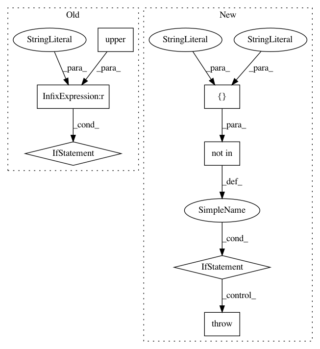

ec396411be11d514a44a18813278f3a41c73ac5f,deslib/des/des_knn.py,DESKNN,__init__,#DESKNN#Any#Any#Any#Any#Any#Any#Any#Any#Any#Any#,70
Before Change
more_diverse=True,
metric="DF"):
metric = metric.upper()
super(DESKNN, self).__init__(pool_classifiers, k, DFP=DFP, with_IH=with_IH, safe_k=safe_k, IH_rate=IH_rate)
self.name = "Dynamic Ensemble Selection-KNN (DES-KNN)"
self.N = int(self.n_classifiers * pct_accuracy)
self.J = int(np.ceil(self.n_classifiers * pct_diversity))
self.metric = metric
self._validate_parameters()
// Set up the diversity metric
self.more_diverse = more_diverse
if metric == "DF":
self.diversity_func = negative_double_fault
elif metric == "Q":
self.diversity_func = Q_statistic
else:
self.diversity_func = ratio_errors
def estimate_competence(self, query, predictions=None):
estimate the competence level of each base classifier :math:`c_{i}` for
the classification of the query sample.
After Change
metric="DF",
knn_classifier="knn"):
metric = metric.upper()
super(DESKNN, self).__init__(pool_classifiers, k, DFP=DFP, with_IH=with_IH, safe_k=safe_k,
IH_rate=IH_rate, knn_classifier=knn_classifier)
self.name = "Dynamic Ensemble Selection-KNN (DES-KNN)"
self.N = int(self.n_classifiers * pct_accuracy)
self.J = int(np.ceil(self.n_classifiers * pct_diversity))
self.metric = metric
In pattern: SUPERPATTERN
Frequency: 3
Non-data size: 7
Instances
Project Name: scikit-learn-contrib/DESlib
Commit Name: ec396411be11d514a44a18813278f3a41c73ac5f
Time: 2018-09-23
Author: Natlem@users.noreply.github.com
File Name: deslib/des/des_knn.py
Class Name: DESKNN
Method Name: __init__
Project Name: sassoftware/python-dlpy
Commit Name: a574e4e80920c99050d5a38cb83cf1d0b61e2c4f
Time: 2017-11-17
Author: kevin.smith@sas.com
File Name: dl_api/caffe_models/model_vgg16.py
Class Name:
Method Name: VGG16_Model
Project Name: sassoftware/python-dlpy
Commit Name: a574e4e80920c99050d5a38cb83cf1d0b61e2c4f
Time: 2017-11-17
Author: kevin.smith@sas.com
File Name: dl_api/caffe_models/model_vgg19.py
Class Name:
Method Name: VGG19_Model